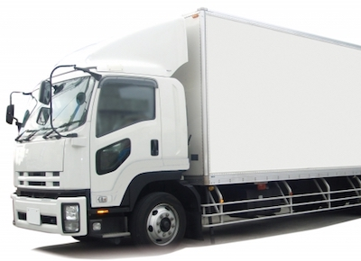
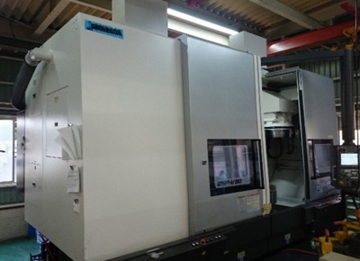
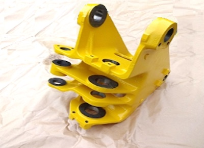

粗材調達から品質管理・改善提案までの全行程を一貫して社内で行える体制を整えています。

1. 調達
- 鋳鍛品、溶断鋼板など、材質、形状を問わず当社にて調達可能です。
- 当社にてグローバルに最適調達しますので、調達にかかる手間を減らします。
- より良い製品とするため、粗材サプライヤーと協業を行っております。

2. 治具設計・プロセス設計
- 生産に必要な治具は当社にて設計、製作しています。
高い精度が求められる治具の設計で悩むことはなくなりますので、当社におまかせください。（MC検定スタッフ1級3名、2級2名）

3. 溶接加工
- 溶接加工時のひずみを予め考慮した職人の技術で対応します。
- 強度確保のための非破壊検査を行います。

4. 機械加工
- マシニングセンタ機械加工にて、0.1mm以下の精度を確保します。
- 高精度高品質が要求される油圧機器用部品も製造しており、自社内での検査も徹底して行っています。

5. 塗装・組立
- 当社にて塗装・組立を行い、お客様の元へお届けします。

6. 品質管理・改善提案
これまで長きに渡り、お客様と協業してさまざまな改善を提案実施してきました。
事例1) 鋳物形状を変更することにより、加工工数を低減し、年間216万円の削減を実現しました。
事例2) 段階的にサイクルタイム短縮改善を行い、トータル30%以上の工数短縮を実現しました。